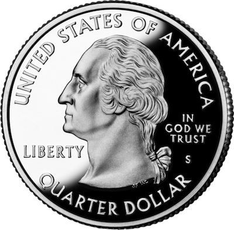

A quick way to decide between two choices is to flip a coin. Instead of looking at the coin, think about what result you were hoping to find. Most people subconsciously desire one result over the other, and this helps you tap into your intuition!

What is one choice?
Your choice
What is your other choice?